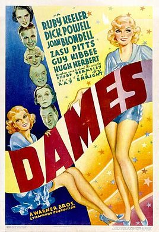

Dames

Starring: Joan Blondell, Dick Powell, Ruby Keeler
Director: Ray Enright, Busby Berkeley
Writer: Robert Lord
Producer: Hal B. Wallis
Dames is a 1934 Warner Bros. musical comedy film directed by Ray Enright with dance numbers created by Busby Berkeley. The film stars Ruby Keeler, Dick Powell, Joan Blondell, Guy Kibbee, ZaSu Pitts, and Hugh Herbert.
Trivia
- The director originally slated to do the film was Archie Mayo, and then a second director, before Ray Enright got the job a week before filming began.
- Some early casting considerations had Ruth Donnelly playing Mathilda instead of ZaSu Pitts, and Hobart Cavanaugh as Ellsworthy Todd.
- At one point, it was suggested that Eleanor Powell do a specialty number, but she declined to do so.
Previous Showings
4 Runs • 1 Festival
Original Billings: 1 run (October 12, 1934)
Original Run: October 12, 1934 (Friday - Saturday)
All runs on record (4):
- October 12, 1934 (Friday - Saturday)Dick Powell, Ruby Keeler
- February 9 - 10, 1990w/ Gold Diggers of 1937
- November 16 - 18, 1991w/ Go Into Your Dance
- March 25 - 26, 2001Hollywood Musicals, 1929-1939w/ Footlight Parade